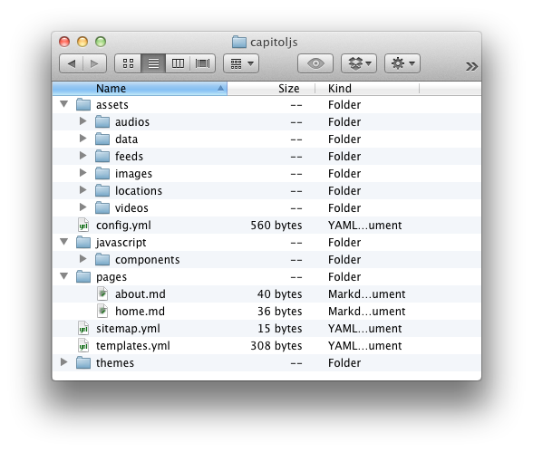
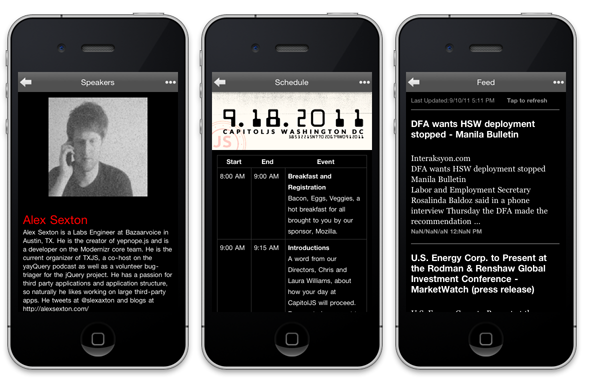
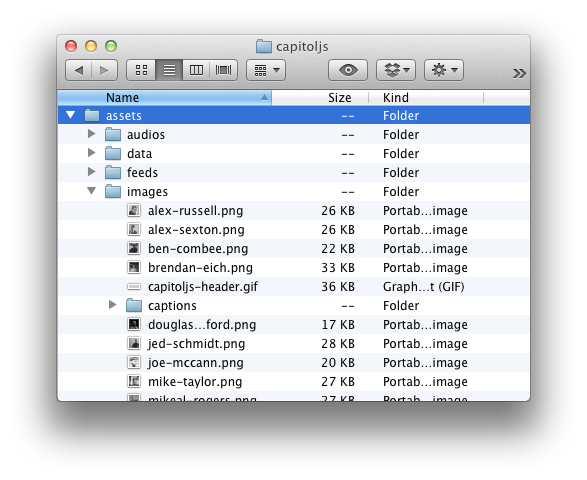
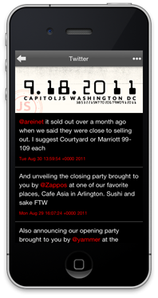
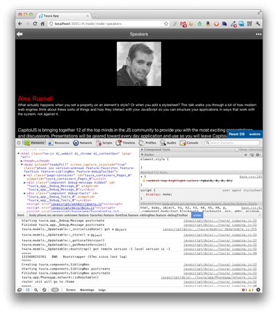
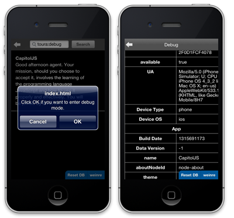

From zero to app in minutes
Mulberry helps web developers rapidly create content-rich native mobile applications. Powered by HTML5, CSS3, and JavaScript and built on top of PhoneGap, Mulberry transforms your content and data into a responsive, native, cross-platform mobile experience.
- Create a basic app in the time it takes to write and organize your content.
- Remix built-in components such as image galleries, video players, maps, Facebook and Twitter sharing, and more.
- Tweak the built-in theme to personalize your app, or go all-out and customize the CSS from scratch.
- Use your JavaScript and HTML5 skills to integrate your own functionality into the platform.
Get in on the alpha
We won’t sell your email, promise.
Open technologies, open source
Mulberry is built on open technology by people who believe in open technology. During the alpha, we’ll be working toward releasing Mulberry under an open-source license.
The Mulberry toolchain
Mulberry smooths over the bumps that web developers often encounter when they apply web technologies to a native platform. It handles things like:
- Over-the-air data updates
- Data persistence
- Full offline functionality
- Application architecture & organization
- Differences in PhoneGap features across platforms
It separates the app development process into a few simple steps:
Scaffold
Creating the structure for a new application takes just a moment:
$ mulberry scaffold capitoljs
Configure
A YAML file gives Mulberry basic configuration information, including settings for the base theme:
config.yml
name: Capitol JS
theme:
name: default
settings:
font-scheme: 'light'
link-color: '#ff0000'
background-color: '#000000'
child-nav-color: '#ffffff'
os:
- ios
type:
- phone
- tablet
jquery: true
Construct

Specify the structure of your application via the sitemap:
sitemap.yml
- home:
- speakers
- schedule
- points-of-interest
- twitter
- feed
- sponsors
- about
Create your pages …
$ mulberry create_page speakers… then organize your content and metadata using YAML, Markdown, and your filesystem:
pages/speakers.md
---
title: Speakers
template: Images
images:
- pamela-fox.png
- alex-sexton.png
- brendan-eich.png
- alex-russell.png
- nicholas-zakas.png
- jed-schmidt.png
- mike-taylor.png
- douglas-crockford.png
- rebecca-murphey.png
- joe-mccann.png
- ben-combee.png
- mikeal-rogers.png
---
assets/images/captions/alex-sexton.md
---
name: Alex Sexton
---
## [Alex Sexton](http://alexsexton.com/)
Alex Sexton is a Labs Engineer at Bazaarvoice in Austin, TX. He is the creator of yepnope.js and is a developer on the Modernizr core team. He is the current organizer of TXJS, a co-host on the yayQuery podcast as well as a volunteer bug-triager for the jQuery project. He has a passion for third party applications and application structure, so naturally he likes working on large third-party apps. He tweets at @slexaxton and blogs at http://alexsexton.com/ 
Customize
You can define your own page layouts in YAML and take advantage of built-in components …
templates.yml
AudioWithImages:
type: node
screens:
- name: index
layoutName: default
backgroundImage: true
regions:
- size: fixed
components:
- PageNav
- size: flex
components:
- ImageGallery
- scrollable: true
components:
- BodyText
- ChildNodes
… or create your own components to integrate with the framework:

$ mulberry create_component Twitterjavascript/components/Twitter.js
mulberry.component('Twitter', {
componentTemplate : dojo.cache('client.components', 'Twitter/Twitter.haml'),
tweetTemplate : dojo.cache('client.components', 'Twitter/Tweet.haml'),
init : function() {
var data = this.node.data[0].json;
$.ajax(userTweets(data), {
dataType : 'jsonp',
success : $.proxy(this, '_onLoad')
});
},
_onLoad : function(tweets) {
var tpl = mulberry.haml(this.tweetTemplate),
html = $.map(tweets, function(tweet) {
tweet.link = tweetURL(tweet);
tweet.text = tweet.text.replace(
/@(\S+)/,
"<a href='http://twitter.com/#!/$1'>@$1</a>"
);
return tpl(tweet);
}).join('');
this.$domNode.html(html);
this.region.refreshScroller();
}
});
Mulberry’s customization opportunities go far beyond components. Mulberry provides a robust JavaScript framework for building your applications, including a powerful router, clear patterns for specifying interactions between components, and low-level components that you can mix in with your own code to rapidly build more complex functionality.
Mulberry’s JavaScript framework is built on top of the powerful Dojo Toolkit, but no knowledge of Dojo is required, and jQuery is included in the default configuration.
Develop

For rapid iteration, Mulberry includes a server that simulates the device experience. You can run your app in a desktop WebKit browser and get access to your standard development tools:
$ mulberry serveTest
Nothing matches the knowledge you gain by testing your application on device. Mulberry provides a one-liner to generate simulator and device* builds for iOS and Android, including integration with weinre on debug.phonegap.com:
$ mulberry test
* You must have an Apple developer certificate and have a properly provisioned device in order for device builds to work on iOS.
Deploy
Run a simple command to create binaries for the various form factors and operating systems your app supports:
$ mulberry deploy